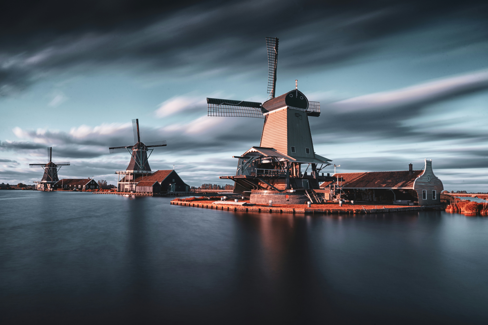

Hi, I'm Darief Maes, a student at the University of California, San Diego. This portfolio is meant to showcase my work and projects. I am currently enrolled in the Data Science program at UCSD, where I am learning about data analysis, machine learning, and programming.
